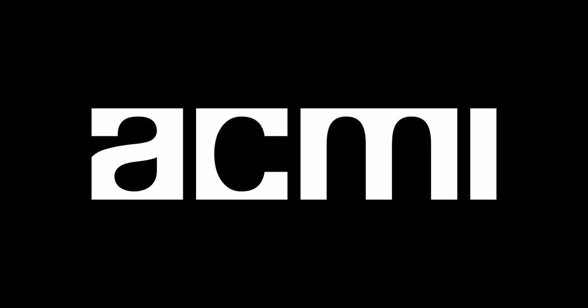

ACMI'">From floor to ceiling, the object wall gathers the machines and ephemera of the moving image — magic lanterns and hand-cranked cameras, projectors and televisions, game consoles, props and the small strange things screens leave behind. Rather than a label on every case, one AUXIO speaks for the whole wall. Ask it aloud or in text, and it answers in a voice you choose, grounded only in ACMI's records.